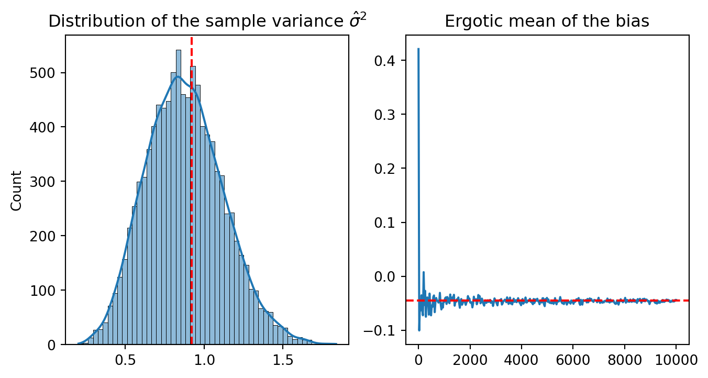

import numpy as np
import matplotlib.pyplot as plt
# -----------------------------------------------------
# Generate a $X1,...X_20$ sample from a normal distribution, n = 20
# -----------------------------------------------------
np.random.seed(42)
x = np.random.normal(0, 1, 20)
# -----------------------------------------------------
# Estimator of the variance
# -----------------------------------------------------
def sample_variance(x):
n = len(x)
mean = np.mean(x)
return np.sum((x - mean)**2) / (n - 1)
# -----------------------------------------------------
# Fonction to compute the bootstrap bias.
# -----------------------------------------------------
def bias_boot(x, fun, nsamp=9999):
x = np.array(x)
n = len(x)
# Compute the plug-in estimator
tobs = fun(x)
tboot = np.empty(nsamp)
for i in range(nsamp):
indices = np.random.choice(n, n, replace=True)
tboot[i] = fun(x[indices])
bias = np.mean(tboot) - tobs
return {'statistic': tobs, 'sample_boot': tboot, 'bias': bias}Bias, Variance and Mean Squared Error (MSE) of an Estimator using Bootstrap Method in python
Definition
Given a sample \(\mathcal{X} = \{X_1, X_2, \ldots, X_n\}\) of size \(n\) from a distribution \(P\).
Let \(\theta = \theta(P)\) \(\in \Theta\) a parameter of interest.
Let \(T(\mathcal{X})\) be a statistic that estimates \(\theta\).
Let \(\theta(P_n)\) be a plug-in estimator of \(\theta\).
In this post, the bootstrap method will be used to estimate the bias, variance, and mean squared error (MSE) of the estimator \(T(\mathcal{X})\) based on the sample \(\mathcal{X}\) :
The bias of \(T(\mathcal{X})\) := \(\mathbb{E_P}[T(\mathcal{X})] - \theta\).
The variance of \(T(\mathcal{X})\) := \(\mathbb{E_P}[(T(\mathcal{X}) - \mathbb{E_P}[T(\mathcal{X})])^2]\).
The mean squared error (MSE) of \(T(\mathcal{X})\) := \(\mathbb{E_P}[(T(\mathcal{X}) - \theta)^2]\).
The bootstrap method has two steps:
Estimation using plug-in estimator \(\theta(P_n)\).
Approximation using Monte Carlo simulation.
Bootstrap Estimation of the bias.
Estimation using plug-in estimator
Real world : \(\mathbb{E_P[R_n(\mathcal{X},P)]}\) with \(R_n(\mathcal{X},P) = T(\mathcal{X}) - \theta(P_n)\).
Bootstrap world : \(R_n^*\) = \(R_n(\mathcal{X}^*,P_n) = T(\mathcal{X}^*) - \theta(P_n)\).
Approximation using Monte Carlo simulation
For a large positive integer \(B\) and by the law of large numbers, \[ \frac{1}{B} \sum_{b=1}^{B} T(\mathcal{X}^*_b, P_n) - \theta(P_n)\overset{\mathbb{P}}{\longrightarrow} \mathbb{E_P}[R_n(\mathcal{X},P)] - \theta(P). \]
Bootstrap Estimation of the Variance.
Given \(T(\mathcal{X})\) an estimator of \(\theta = \theta(P)\).
Real world : \(\mathbb{E_P}[R_n(\mathcal{X},P)^2]\) with \(R_n(\mathcal{X},P) = T(\mathcal{X}) - E_P[T(\mathcal{X})]\).
Bootstrap world : \(R_n^*\) = \(R_n(\mathcal{X}^*,P_n) = T(\mathcal{X}^*) - E(T(\mathcal{X}^*)|\mathcal{X})\).
Approximation using Monte Carlo simulation
For a large positive integer \(B\) and by the law of large numbers, \[ \begin{align} \frac{1}{B} \sum_{b=1}^{B} &\left(T(\mathcal{X}^*_b) - \frac{1}{B} \sum_{b=1}^{B} T(\mathcal{X}^*_b) \right)^2 \notag \\ &= \frac{1}{B} \sum_{b=1}^{B} T(\mathcal{X}^*_b)^2 - \left(\frac{1}{B} \sum_{b=1}^{B} T(\mathcal{X}^*_b)\right)^2 \notag \\ &\overset{\mathbb{P}}{\longrightarrow} \mathbb{E_P}[R_n(\mathcal{X},P)^2] - \left(\mathbb{E_P}[R_n(\mathcal{X},P)]\right)^2. \end{align} \]
Bootstrap Estimation of the Mean Squared Error (MSE).
Let \(T(\mathcal{X})\) be an estimator of \(\theta = \theta(P)\).
Let \(\theta(P_n)\) be a plug-in estimator of \(\theta\).
Real world : \(\mathbb{E_P}[R_n(\mathcal{X},P)^2]\) with \(R_n(\mathcal{X},P) = T(\mathcal{X}) - \theta(P)\).
Bootstrap world : \(R_n^*\) = \(R_n(\mathcal{X}^*,P_n) = T(\mathcal{X}^*) - \theta(P_n)\).
Approximation using Monte Carlo simulation
For a large positive integer \(B\) and by the law of large numbers,
\[ \begin{align} \frac{1}{B} \sum_{b=1}^{B} &\left(T(\mathcal{X}^*_b) - \theta(P_n) \right)^2 \notag \\ &= \frac{1}{B} \sum_{b=1}^{B} T(\mathcal{X}^*_b)^2 - 2 \theta(P_n) \frac{1}{B} \sum_{b=1}^{B} T(\mathcal{X}^*_b) + \theta(P_n)^2 \notag \\ &\overset{\mathbb{P}}{\longrightarrow} \mathbb{E_P}[T(\mathcal{X})^2] - 2 \theta(P) \mathbb{E_P}[T(\mathcal{X})] + \theta(P)^2\\ &= \mathbb{E_P}[R_n(\mathcal{X},P)^2] \end{align} \]
Choosing B
Factors to consider when choosing the number of bootstrap samples \(B\):
The computational cost of the bootstrap method.
The size of the sample \(\mathcal{X}\).
Model complexity.
The most important aspect is to ensure that the algorithm converges.So, continue to increase the number of bootstrap samples until the algorithm stabilizes.
Python Implementation
Given a sample \(\mathcal{X} = \{X_1, X_2, \ldots, X_20\}\) of size \(n = 20\) from a centered normal distribution \(P\) with mean \(\mu = 0\) and variance \(\sigma^2 = 1\).
The parameters of interest are the the variance \(\theta = \theta(P) = \sigma^2\).
The estimator \(T(\mathcal{X})\) is the sample variance :
\[ T(\mathcal{X}) = \frac{1}{n-1} \sum_{i=1}^{n} (X_i - \bar{X})^2 \]
where \(\bar{X} = \frac{1}{n} \sum_{i=1}^{n} X_i\).
Let represent the distribution of \(\hat{\sigma}^2\) and the ergotic mean of the bias.
import seaborn as sns
B = 10_000
# -----------------------------------------------------
# Compute the bootstrap bias of nsamp from 1 to B
# -----------------------------------------------------
boot_bias = [bias_boot(x, sample_variance, nsamp=i)for i in np.linspace(1, B,350, dtype=int)]
# -----------------------------------------------------
# Extract the sample variance and the ergotic mean of the bias
# -----------------------------------------------------
sigma_hat_2 = boot_bias[-1]['sample_boot']
# -----------------------------------------------------
# Compute the p-value
# -----------------------------------------------------
p_values = np.mean(sigma_hat_2 > boot_bias[-1]['statistic'])
fig, axes = plt.subplots(1, 2, figsize=(8, 4))
# -----------------------------------------------------
# Plot the distribution of the sample variance
# -----------------------------------------------------
sns.histplot(sigma_hat_2, ax=axes[0], kde=True)
axes[0].set_title(r'Distribution of the sample variance $\hat{\sigma}^2$')
axes[0].axvline(boot_bias[-1]['statistic'], color='red', linestyle='--')
# -----------------------------------------------------
# Plot the ergotic mean of the bias
# -----------------------------------------------------
axes[1].plot(np.linspace(1, B,350, dtype=int),[b['bias'] for b in boot_bias])
axes[1].axhline(np.mean([b['bias'] for b in boot_bias]), color='red', linestyle='--')
axes[1].set_title('Ergotic mean of the bias')
plt.show()
The distribution of the sample variance \(\hat{\sigma}^2\) is centered around the plug-in estimator \(\hat{\sigma}^2\). For B >4000, the ergotic mean of the bias stabilizes.
References
Wasserman, Larry. 2013. All of Statistics: A Concise Course in Statistical Inference. Springer Science & Business Media.